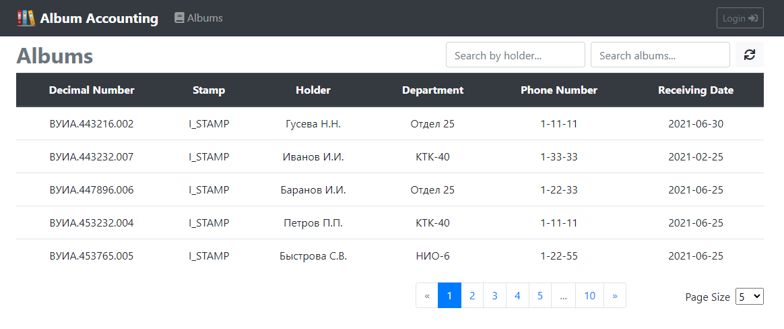

| Backend | Frontend |
|---|---|
|
Maven Spring Boot Spring MVC Spring Data JPA (Hibernate) Spring Security REST (Jackson) JSON Web Token JUnit 5 OpenAPI 3 |
Angular 2 Bootstrap 4 |
Данное приложение используется работниками архива для учета альбомов конструкторской документации, поступающих в архив на хранение, и выдаваемых разработчикам для личного пользования, а также позволяет определять текущее местонахождение требующегося альбома. Примечание. Под альбомом в данном случае понимается некоторое количество взаимосвязанных конструкторских документов, распечатанных на бумаге и переплетенных в книгу. Каждый альбом имеет децимальный номер, равный децимальному номеру главного документа в альбоме, а также "штамп"- специальное обозначение, определяющее производственную область применения альбома.
В приложении используется три вида пользователей: анонимные пользователи, работники архива и администраторы. Анонимные пользователи могут просматривать информацию об имеющихся в архиве альбомах конструкторской документации, а также осуществлять поиск альбомов по их децимальным номерам. Поддерживается поиск альбомов по имени текущего держателя, что удобно использовать при необходимости проверки какие альбомы числятся за тем или иным разработчиком.
Помимо действий с альбомами работники архива могут просматривать информацию о разработчиках, выбирая интересующий отдел. Также им доступна возможность добавлять, редактировать и удалять информацию о разработчиках. В дальнейшем эта информация используется для выдачи им альбомов.


Администораторы имеют все права работников архива. Таже им доступна возможность просматривать информацию о пользователях приложения с опцией поиска по имени/адресу эл. почты. Администраторы могут создавать новых пользователей, назначая им соответствующие права доступа, редактировать, банить и удалять уже имеющихся. Им доступна возможность изменять пароли пользователей, что удобно использовать, если пользователь не может вспомнить свой текущий пароль.
Поимо вышеперечисленного администраторы имеют возможность просматривать информацию об отделах, создавать новые отделы, а также редактировать и удалять имеющиеся.
Любому авторизованному пользователю приложения доступна возможность просмотреть свой профиль, а также сменить пароль.